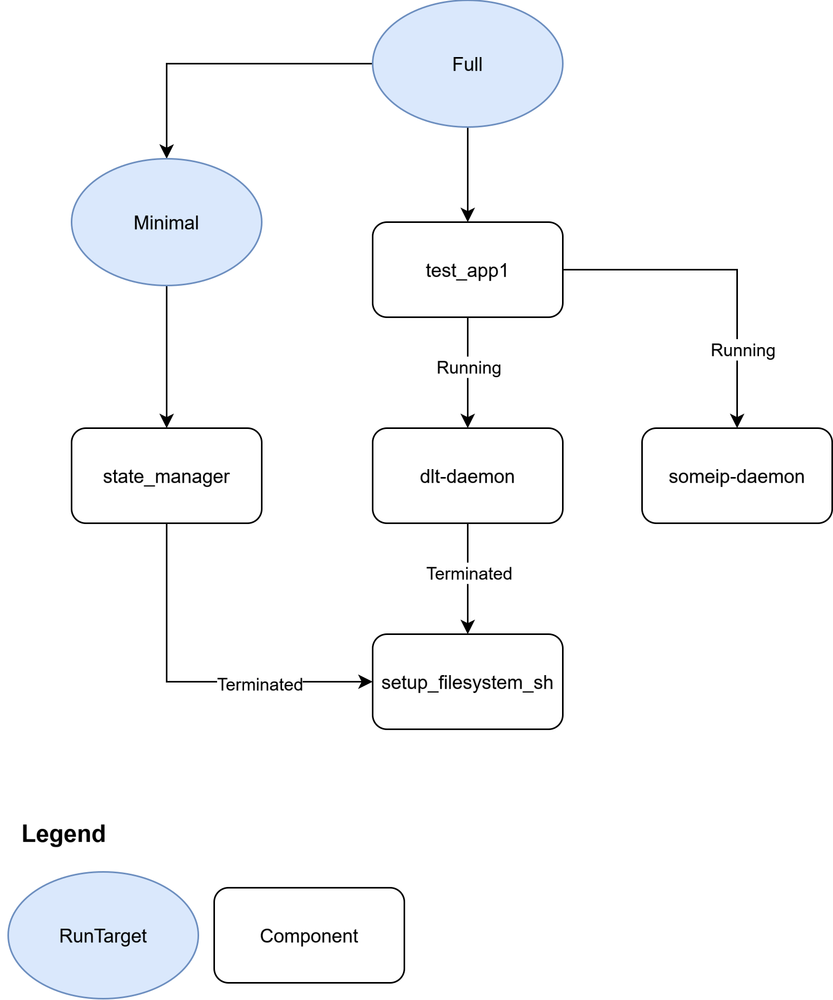

Configuration Examples#
This document provides a set of configuration examples that come with the Launch Manager schema. These examples are designed to show common ways to use Launch Manager and to demonstrate how configurations should be structured. They serve as practical guides, helping users understand how to apply various features effectively.
example_conf.json#
example_conf.json
{
"schema_version": 1,
"defaults": {
"deployment_config": {
"ready_timeout": 0.5,
"shutdown_timeout": 0.5,
"environmental_variables": {
"LD_LIBRARY_PATH": "/opt/lib"
},
"bin_dir": "/opt",
"working_dir": "/tmp",
"ready_recovery_action": {
"restart": {
"number_of_attempts": 0,
"delay_before_restart": 0
}
},
"recovery_action": {
"switch_run_target": {
"run_target": "Off"
}
},
"sandbox": {
"uid": 1000,
"gid": 1000,
"supplementary_group_ids": [],
"scheduling_policy": "SCHED_OTHER",
"scheduling_priority": 0
}
},
"component_properties": {
"application_profile": {
"application_type": "Reporting_And_Supervised",
"is_self_terminating": false,
"alive_supervision": {
"reporting_cycle": 0.5,
"failed_cycles_tolerance": 2,
"min_indications": 1,
"max_indications": 3
}
},
"depends_on": [],
"process_arguments": [],
"ready_condition": {
"process_state": "Running"
}
},
"run_target": {
"depends_on": [],
"transition_timeout": 5
},
"alive_supervision" : {
"evaluation_cycle": 0.5
},
"watchdog": {
"device_file_path": "/dev/watchdog",
"max_timeout": 2.0,
"deactivate_on_shutdown": true,
"require_magic_close": false
}
},
"components": {
"setup_filesystem_sh": {
"description": "Script to mount partitions at the right directories",
"component_properties": {
"binary_name": "bin/setup_filesystem.sh",
"application_profile": {
"application_type": "Native",
"is_self_terminating": true
},
"process_arguments": ["-a", "-b"],
"ready_condition": {
"process_state": "Terminated"
}
},
"deployment_config": {
"bin_dir": "/opt/scripts"
}
},
"dlt-daemon": {
"description": "Logging application",
"component_properties": {
"binary_name": "dltd",
"application_profile": {
"application_type": "Native"
},
"depends_on": ["setup_filesystem_sh"]
},
"deployment_config": {
"bin_dir" : "/opt/apps/dlt-daemon"
}
},
"someip-daemon": {
"description": "SOME/IP application",
"component_properties": {
"binary_name": "someipd"
},
"deployment_config": {
"bin_dir" : "/opt/apps/someip"
}
},
"test_app1": {
"description": "Simple test application",
"component_properties": {
"binary_name": "test_app1",
"depends_on": ["dlt-daemon", "someip-daemon"]
},
"deployment_config": {
"bin_dir" : "/opt/apps/test_app1"
}
},
"state_manager": {
"description": "Application that manages life cycle of the ECU",
"component_properties": {
"binary_name": "sm",
"application_profile": {
"application_type": "State_Manager"
},
"depends_on": ["setup_filesystem_sh"]
},
"deployment_config": {
"bin_dir" : "/opt/apps/state_manager"
}
}
},
"run_targets": {
"Minimal": {
"description": "Minimal functionality of the system",
"depends_on": ["state_manager"],
"recovery_action": {
"switch_run_target": {
"run_target": "Off"
}
}
},
"Full": {
"description": "Everything running",
"depends_on": ["test_app1", "Minimal"],
"transition_timeout": 5,
"recovery_action": {
"switch_run_target": {
"run_target": "Minimal"
}
}
},
"Off": {
"description": "Nothing is running",
"recovery_action": {
"switch_run_target": {
"run_target": "Off"
}
}
}
},
"alive_supervision" : {
"evaluation_cycle": 0.5
},
"fallback_run_target": {
"description": "Switching off everything",
"depends_on": [],
"transition_timeout": 1.5
},
"initial_run_target": "Minimal",
"watchdog": {
"device_file_path": "/dev/watchdog",
"max_timeout": 2,
"deactivate_on_shutdown": true,
"require_magic_close": false
}
}
The example_conf.json file is a fundamental example within the Launch Manager system. While it presents a relatively simple setup, its main goal is to clearly show the key ideas behind defining a Run Target, specifying its individual Components, and setting up how they depend on each other.
Users can examine this basic example to understand the core principles. These principles can then be scaled and applied to build much more elaborate Launch Manager configurations, effectively managing even the most complex application setups.
A high-level overview of this configuration, which highlights its dependencies, is shown below:
{kind=link}
